Telegram — канал
Пост 4:5. Основная карточка — тёмная: она узнаётся в ленте и совпадает с сайтом. Светлые варианты пригодятся, если рядом идут тёмные посты или нужен «бумажный» тон.
{kind=link}
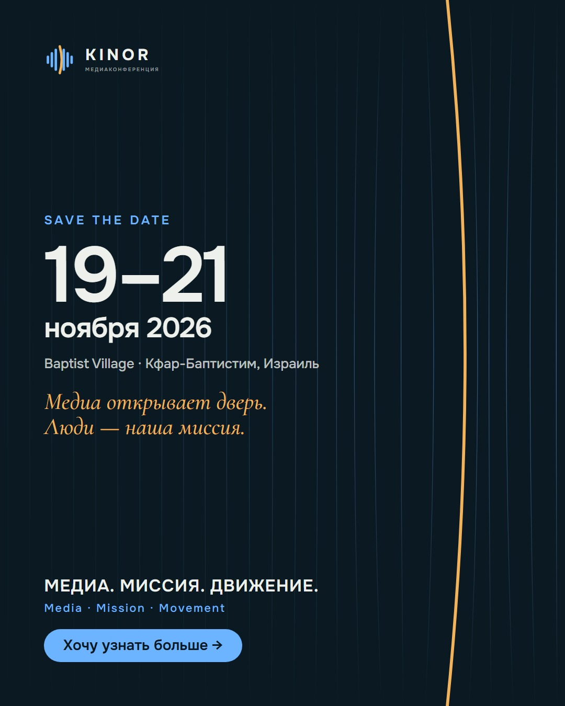
tg-post-a-dark.jpg{kind=link}
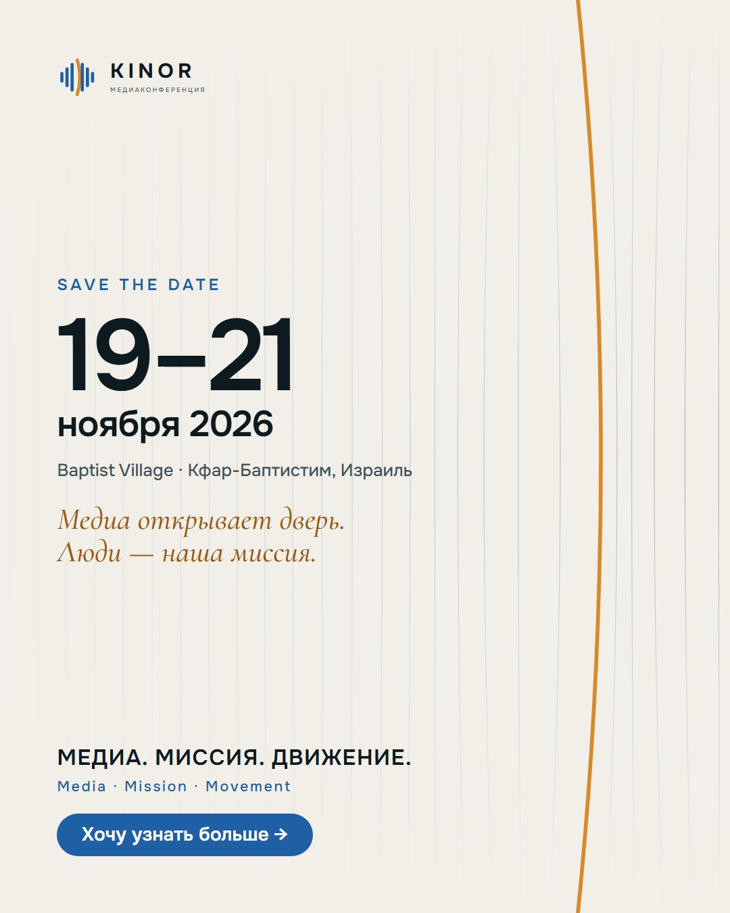
tg-post-a-light.jpg{kind=link}
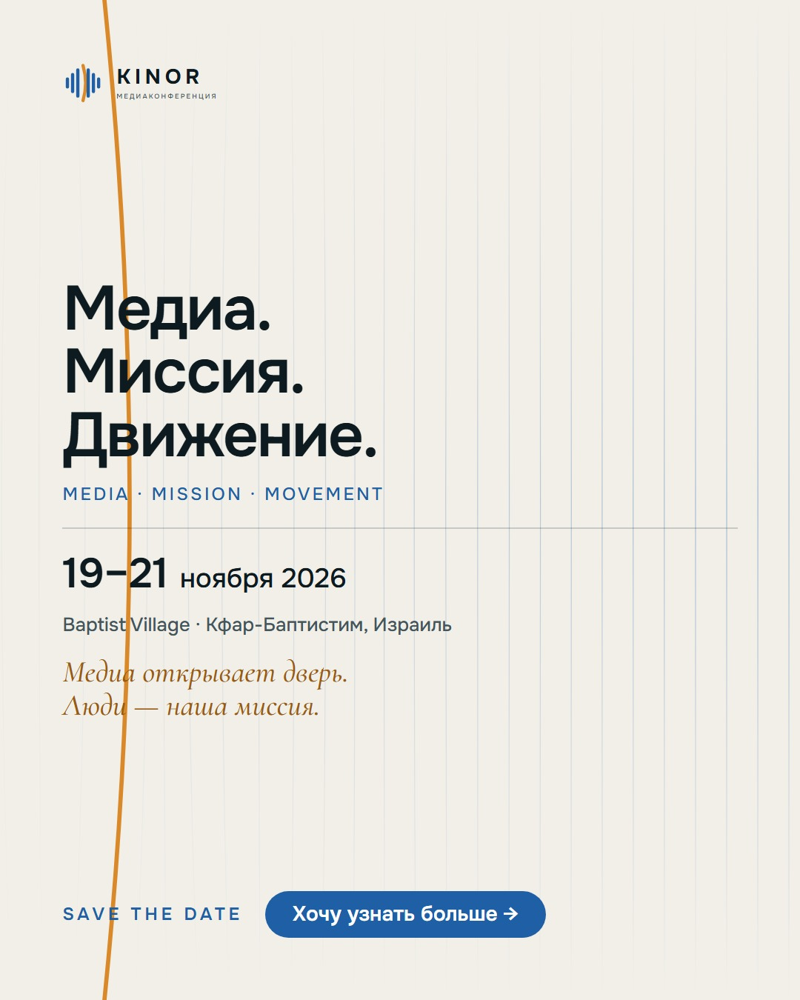
tg-post-b-light.jpg{kind=link}
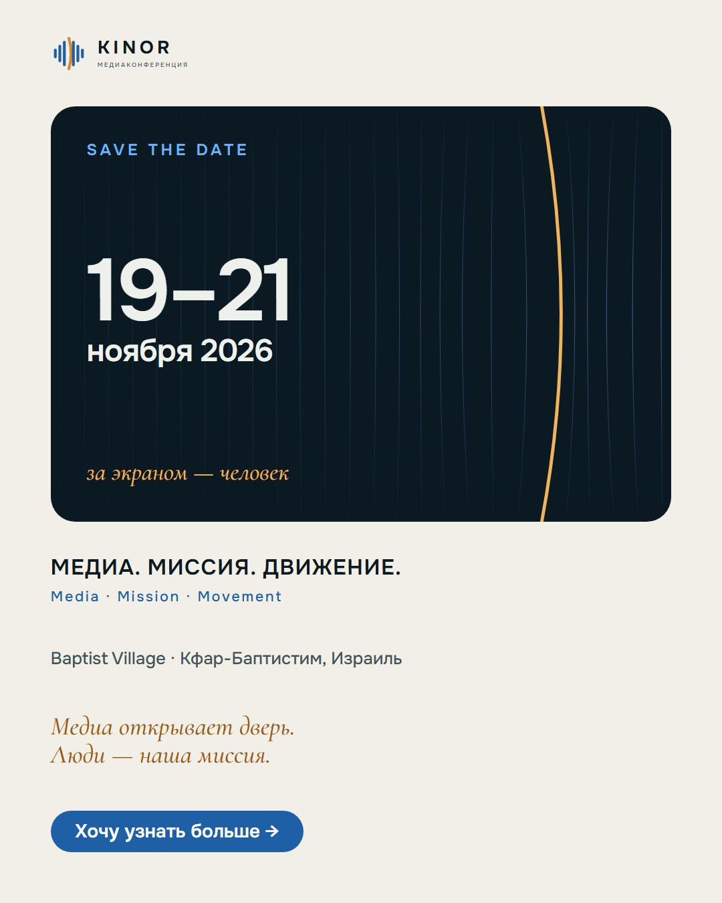
tg-post-c-light.jpgТекст сообщения — готов к копированию
Сохраните даты: 19–21 ноября 2026. В Baptist Village в Израиле пройдёт KINOR MediaConference 2026 — встреча людей, которые создают медиа, развивают цифровые проекты и хотят через них достигать реальных людей. МЕДИА. МИССИЯ. ДВИЖЕНИЕ. Мы будем говорить не только о камерах, трансляциях, социальных сетях и контенте. Нас интересует то, что происходит по другую сторону экрана: как внимание становится откликом, отклик — разговором, а цифровая встреча может привести к доверию, отношениям и следующему шагу человека. Конференция собирает церковные медиакоманды, пасторов и лидеров, авторов и блогеров, технических и творческих специалистов, миссионерские и независимые проекты, а также тех, кто уже накопил опыт и готов делиться им с другими. Будут практические сессии, реальные кейсы, разговоры, новые знакомства и пространство для сотрудничества. 📍 Baptist Village, Israel 🗓 19–21 ноября 2026 Полная программа и регистрация появятся позже. Если хотите первыми получить подробности и информацию об открытии регистрации — оставьте свои контакты: [Хочу узнать больше] Медиа открывает дверь. Люди — наша миссия.
Личные сообщения — Telegram и WhatsApp
Квадрат 1:1: в личной переписке он открывается целиком и не обрезается превью.
{kind=link}
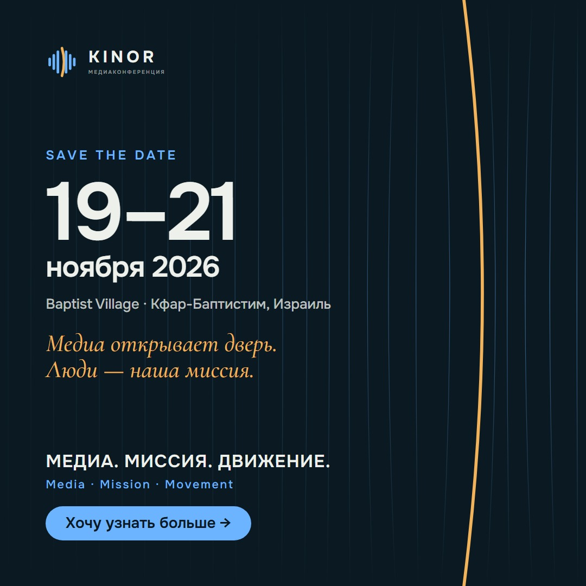
square-a-dark.jpg{kind=link}
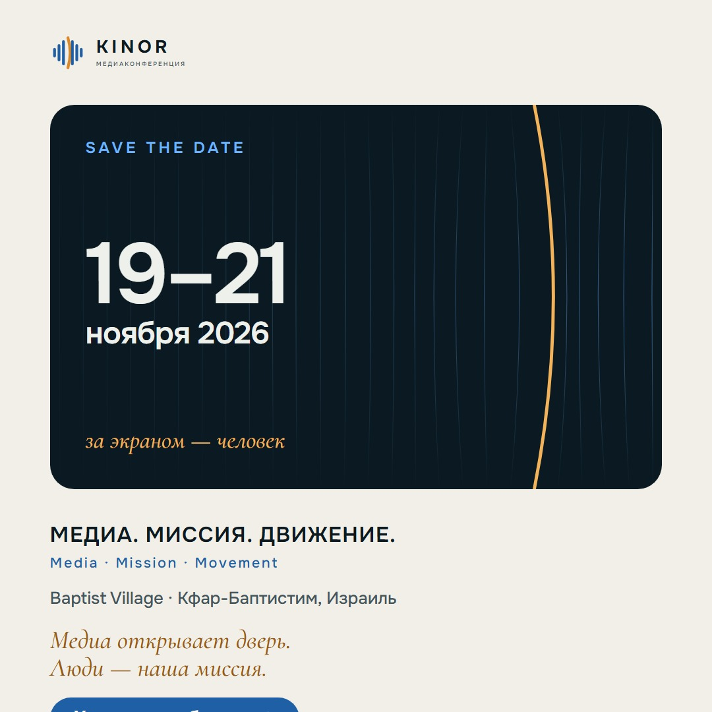
square-c-light.jpgТекст сообщения — готов к копированию
Привет! Хочу заранее отправить тебе даты нашей KINOR MediaConference 2026 — 19–21 ноября в Baptist Village. В этом году мы хотим сделать её шире обычной «медиаконференции»: не только техника и производство контента, а вопрос о том, как через медиа действительно встречаться с людьми, начинать разговор и строить дальнейшие отношения. Думаю, тебе это может быть интересно и по твоему опыту, и просто как возможность познакомиться с другими командами и проектами. Пока полной регистрации ещё нет, но уже можно оставить контакт, чтобы получить программу и подробности, когда они появятся: [ссылка] А пока просто сохрани 19–21 ноября 🗓
Статус WhatsApp и Stories
Вертикаль 9:16 с запасом по краям: нижняя треть остаётся под интерфейс приложения.
{kind=link}
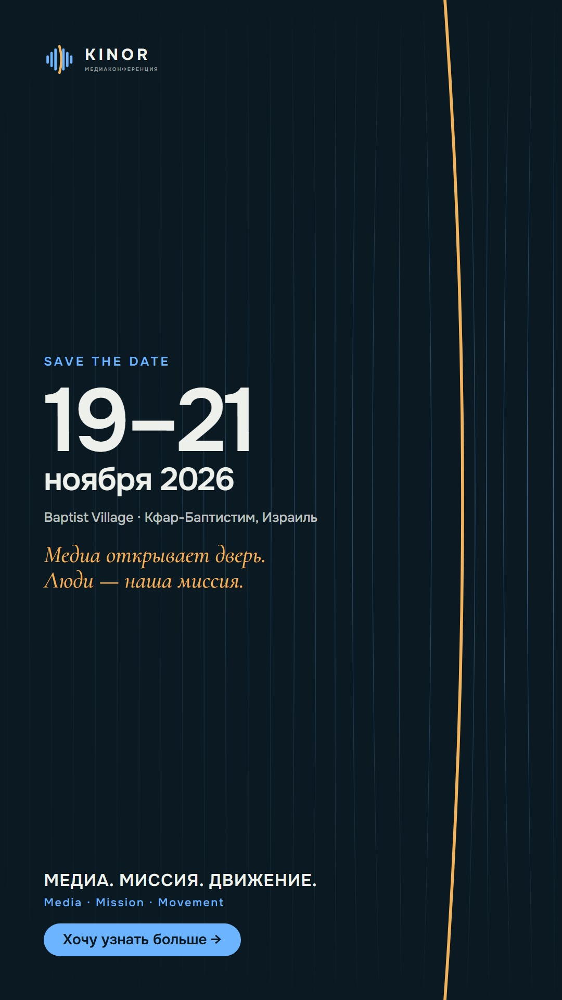
story-a-dark.jpg{kind=link}
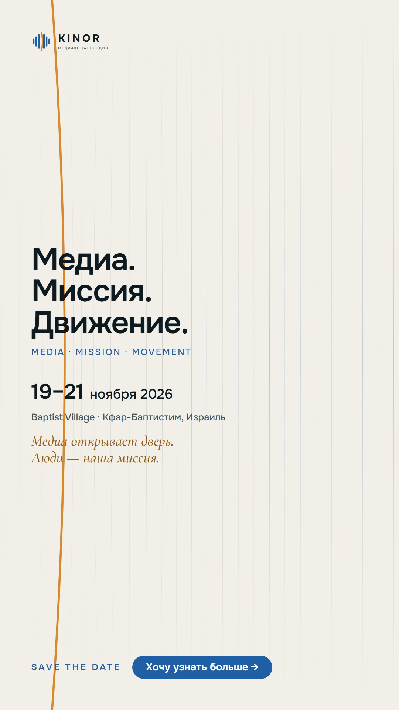
story-b-light.jpgEmail и рассылка
Шапка письма 1200×500 (в письме — ширина 600 px, картинка вдвое крупнее для Retina) и карточка в тело письма. Кнопка в письме — текстовая, ссылкой; в картинке кнопки нет.
{kind=link}
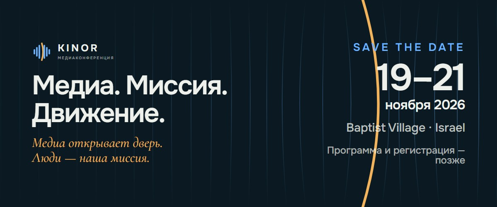
email-head-dark.jpg{kind=link}
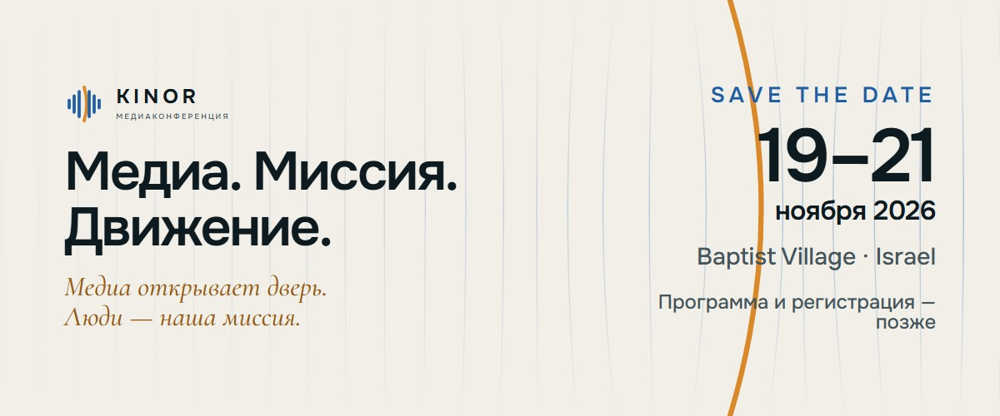
email-head-light.jpg{kind=link}
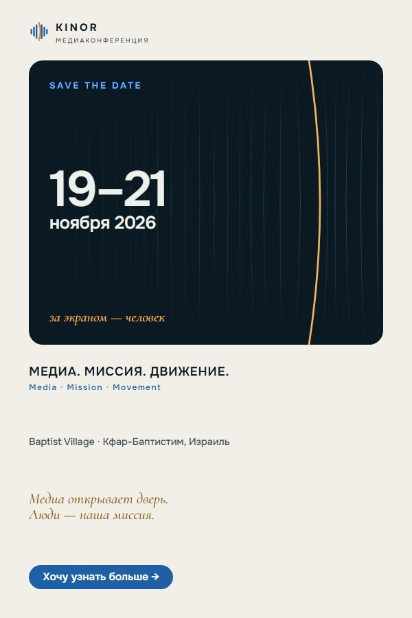
mail-card-light.jpg{kind=link}
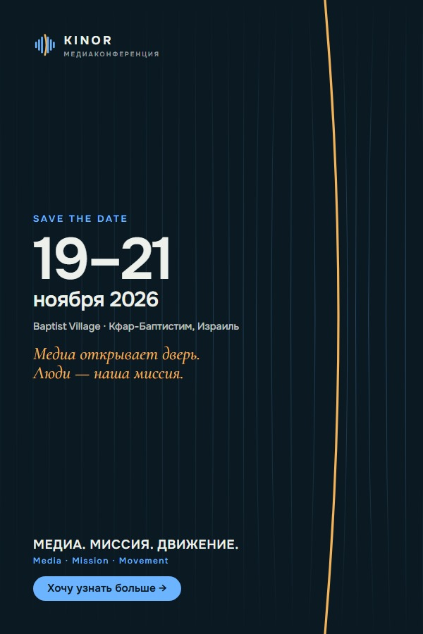
mail-card-dark.jpgТекст сообщения — готов к копированию
Тема письма: Save the Date: KINOR MediaConference 2026 · 19–21 ноября 19–21 ноября 2026 года в Baptist Village, Israel состоится KINOR MediaConference 2026. МЕДИА. МИССИЯ. ДВИЖЕНИЕ. Мы собираем людей, которые создают контент, развивают церковные медиаслужения и независимые цифровые проекты, работают с технологиями и ищут новые способы достигать людей в цифровом пространстве. Главный вопрос конференции — не просто как создавать больше медиа, а что происходит с человеком после того, как он увидел наш материал. Как перейти от охвата к содержательному отклику? От комментария — к разговору? От цифрового контакта — к доверию, отношениям и следующему шагу? В программе будут практические сессии, реальные кейсы, разговоры с опытными командами, обмен опытом и время для знакомства и сотрудничества. 19–21 ноября 2026 · Baptist Village · Israel Полная программа, участники и регистрация будут опубликованы позже. Хотите получить информацию одними из первых? [Хочу узнать больше] Медиа открывает дверь. Люди — наша миссия.
Печать — флаер A5
A5 148×210 мм, 300 dpi. Перед печатью добавить вылеты 3 мм, перевести в CMYK (Night — составной чёрный 60/40/40/100) и заменить QR на настоящий.
{kind=link}
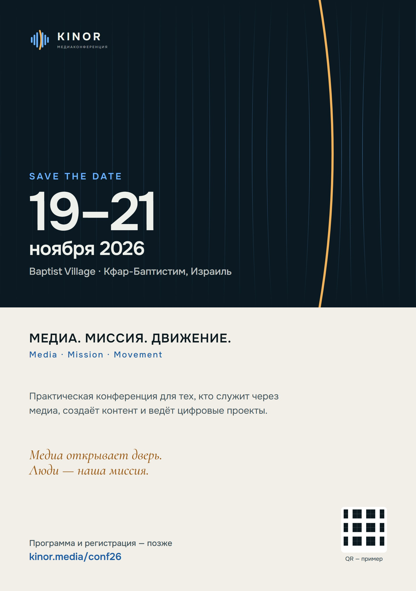
flyer-a5.jpgТрансляция 16:9
Заставка в начале и финальный экран с QR. Безопасная зона 90%, кегль не меньше 36 px на 1920, тонкие струны в 1,5 раза толще — проектор съедает тонкие линии.
{kind=link}
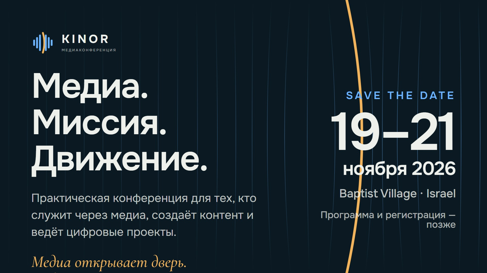
bcast-open-dark.jpg{kind=link}
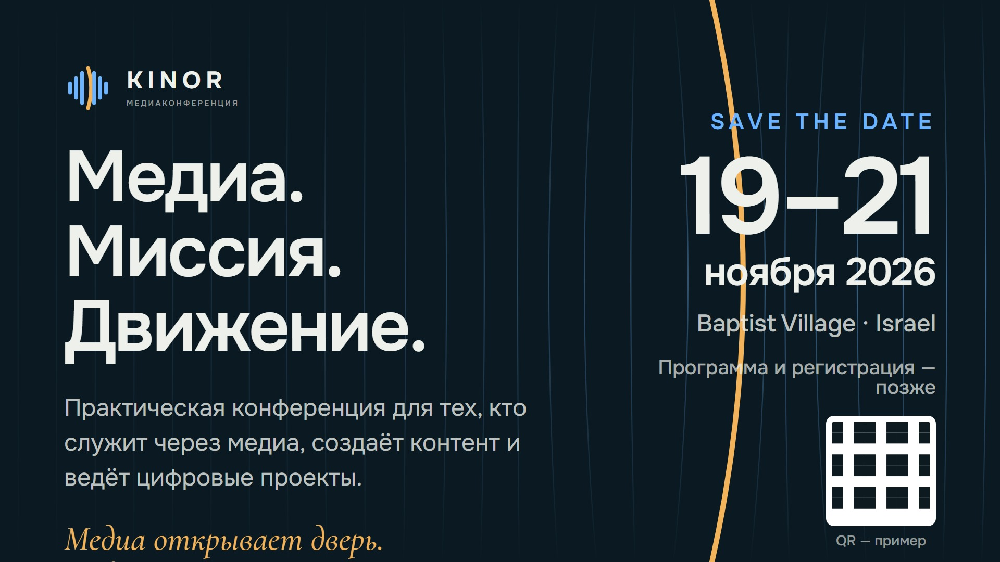
bcast-end-dark.jpg{kind=link}
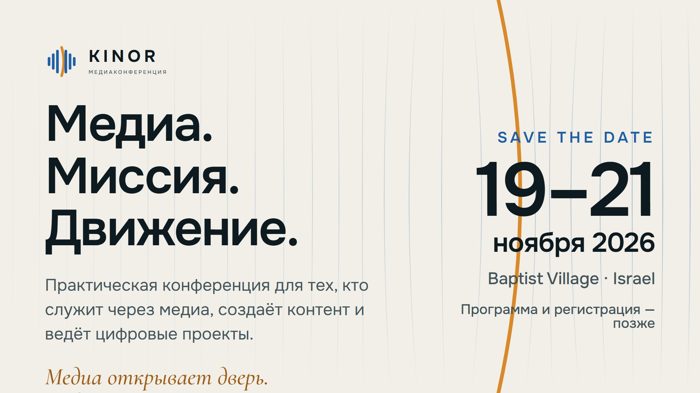
bcast-light.jpgТекст сообщения — готов к копированию
В начале трансляции: KINOR MediaConference 2026 19–21 ноября · Baptist Village · Israel МЕДИА. МИССИЯ. ДВИЖЕНИЕ. Для тех, кто создаёт медиа и хочет через них достигать людей Подробности скоро В конце трансляции: Хотите узнать о KINOR MediaConference 2026? 19–21 ноября · Baptist Village · Israel Сохраните дату и оставьте контакт, чтобы получить подробности [QR / короткая ссылка]
Правила
Что нельзя менять
QR-коды на макетах — заглушки. Ссылка на страницу интереса подставляется, когда страница опубликована.